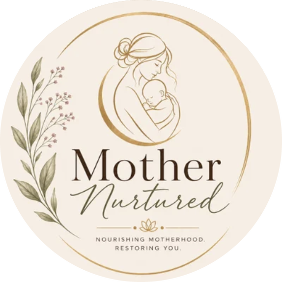

Care for every season of motherhood
In-home postpartum care across Reno/Sparks, plus 90-minute studio massage. See current pricing and availability on MassageBook.
We come to you
Deep Nurture Experience
A complete postpartum nurture session in the comfort of your home, so you can rest and receive while baby stays close.
- Herbal foot soak: mugwort, ginger, cinnamon, rose & Dead Sea salts
- Acupressure massage
- Deeply therapeutic bodywork
- Ribcage & diaphragm opening
Mother + Baby Bodywork
Postpartum bodywork for you, paired with gentle infant massage inspired by pediatric tuina. Supports baby's comfort, digestion, relaxation and body awareness, and teaches you simple tools to use at home.
Book this sessionMother Bodywork
Focused, restorative bodywork for the postpartum mother. Releasing what's held, rebuilding warmth, and giving your body room to heal.
Book this sessionMassage, unhurried
Signature Postnatal Massage
A slow, deeply restorative postnatal massage designed for the body after birth: releasing tension from feeding, carrying and rocking, and calming the nervous system.
Book this sessionPrenatal Massage
Safe, supportive bodywork for pregnancy. Easing back, hip and leg discomfort and creating a calm space for you and your growing baby.
Book this sessionTherapeutic Massage
Intentional therapeutic massage for any body. Addressing pain, tension and stress with skill rooted in Eastern traditions.
Book this sessionWatch the nurture

Your next chapterReady to be nurtured?
Sessions are by appointment. Choose your service and time on MassageBook. It takes about a minute.